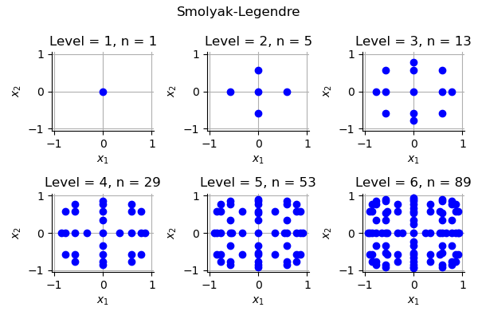
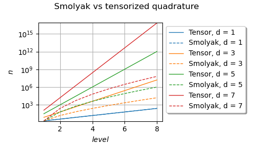
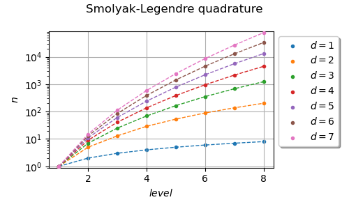

Note
Go to the end to download the full example code
Plot the Smolyak quadrature¶
The goal of this example is to present different properties of Smolyak’s quadrature.
import openturns as ot
import openturns.experimental as otexp
import openturns.viewer as otv
from matplotlib import pylab as plt
In the first example, we plot the nodes different levels of Smolyak-Legendre quadrature.
uniform = ot.GaussProductExperiment(ot.Uniform(-1.0, 1.0))
collection = [uniform] * 2
In the following loop, the level increases from 1 to 6. For each level, we create the associated Smolyak quadrature and plot the associated nodes.
number_of_rows = 2
number_of_columns = 3
bounding_box = ot.Interval([-1.05] * 2, [1.05] * 2)
grid = ot.GridLayout(number_of_rows, number_of_columns)
for i in range(number_of_rows):
for j in range(number_of_columns):
level = 1 + j + i * number_of_columns
experiment = otexp.SmolyakExperiment(collection, level)
nodes, weights = experiment.generateWithWeights()
sample_size = weights.getDimension()
graph = ot.Graph(
r"Level = %d, n = %d" % (level, sample_size), "$x_1$", "$x_2$", True
)
cloud = ot.Cloud(nodes)
cloud.setPointStyle("circle")
graph.add(cloud)
graph.setBoundingBox(bounding_box)
grid.setGraph(i, j, graph)
unit_width = 2.0
total_width = unit_width * number_of_columns
unit_height = unit_width
total_height = unit_height * number_of_rows
view = otv.View(grid, figure_kw={"figsize": (total_width, total_height)})
_ = plt.suptitle("Smolyak-Legendre")
_ = plt.subplots_adjust(wspace=0.4, hspace=0.4)
plt.tight_layout()
plt.show()

In the previous plot, the number of nodes is denoted by  .
We see that the number of nodes in the quadrature slowly increases
when the quadrature level increases.
.
We see that the number of nodes in the quadrature slowly increases
when the quadrature level increases.
Secondly, we want to compute the number of nodes depending on the dimension and the level.
Assume that the number of nodes depends on the level
from the equation  .
In a fully tensorized grid, the number of nodes is
([gerstner1998] page 216):
.
In a fully tensorized grid, the number of nodes is
([gerstner1998] page 216):
![n_{\textrm{tensorisation}} = O\left(2^{\ell d}\right).]()
We are going to see that Smolyak’s quadrature reduces drastically that number.
Let  be the number of the marginal univariate quadrature of
level
be the number of the marginal univariate quadrature of
level  .
The number of nodes in Smolyak’s sparse grid is:
.
The number of nodes in Smolyak’s sparse grid is:
![n_\ell^d = \sum_{\|\boldsymbol{k}\|_1 \leq \ell + d - 1} m_{k_1} \cdots m_{k_d}.]()
If , then the number of nodes of
Smolyak’s quadrature is:
![n_{\textrm{Smolyak}} = O\left(2^\ell \ell^{d - 1}\right).]()
In the following script, we plot the number of nodes versus the level,
of the tensor product and Smolyak experiments, under the assumption
that  and
and  .
In other words, we assume that the constants involved in the previous
Landau equations are equal to 1.
.
In other words, we assume that the constants involved in the previous
Landau equations are equal to 1.
level_max = 8 # Maximum level
dimension_max = 8 # Maximum dimension
level_list = list(range(1, 1 + level_max))
graph = ot.Graph(
"Smolyak vs tensorized quadrature", r"$level$", r"$n$", True, "topleft"
)
dimension_list = list(range(1, dimension_max, 2))
palette = ot.Drawable().BuildDefaultPalette(len(dimension_list))
graph_index = 0
for dimension in dimension_list:
number_of_nodes = ot.Sample(level_max, 1)
# Tensorized
for level in level_list:
number_of_nodes[level - 1, 0] = 2 ** (level * dimension)
curve = ot.Curve(ot.Sample.BuildFromPoint(level_list), number_of_nodes)
curve.setLegend("")
curve.setLineStyle("solid")
curve.setColor(palette[graph_index])
curve.setLegend("Tensor, d = %d" % (dimension))
graph.add(curve)
# Smolyak
for level in level_list:
number_of_nodes[level - 1, 0] = 2 ** level * level ** (dimension - 1)
curve = ot.Curve(ot.Sample.BuildFromPoint(level_list), number_of_nodes)
curve.setLegend("")
curve.setLineStyle("dashed")
curve.setColor(palette[graph_index])
curve.setLegend("Smolyak, d = %d" % (dimension))
graph.add(curve)
graph_index += 1
graph.setLogScale(ot.GraphImplementation.LOGY)
view = otv.View(
graph,
figure_kw={"figsize": (5.0, 3.0)},
legend_kw={"bbox_to_anchor": (1.0, 1.0), "loc": "upper left"},
)
plt.tight_layout()
plt.show()

We see that the number of nodes increases when the level increases.
Smolyak’s number of nodes is, however, smaller or equal to the number of
nodes involved in a tensor product quadrature rule.
In dimension 7 for example, the quadrature level 8 leads to less than
 nodes with Smolyak’s quadrature but more than
nodes with Smolyak’s quadrature but more than
 nodes with a tensor product quadrature.
nodes with a tensor product quadrature.
In the following cell, we count the number of nodes in Smolyak’s quadrature using a Gauss-Legendre marginal univariate experiment. We perform a loop over the levels from 1 to 8 and the dimensions from 1 to 7.
level_max = 8 # Maximum level
dimension_max = 8 # Maximum dimension
uniform = ot.GaussProductExperiment(ot.Uniform(-1.0, 1.0))
level_list = list(range(1, 1 + level_max))
graph = ot.Graph("Smolyak-Legendre quadrature", r"$level$", r"$n$", True, "topleft")
palette = ot.Drawable().BuildDefaultPalette(dimension_max - 1)
graph_index = 0
for dimension in range(1, dimension_max):
number_of_nodes = ot.Sample(level_max, 1)
for level in level_list:
collection = [uniform] * dimension
experiment = otexp.SmolyakExperiment(collection, level)
nodes, weights = experiment.generateWithWeights()
size = nodes.getSize()
number_of_nodes[level - 1, 0] = size
cloud = ot.Cloud(ot.Sample.BuildFromPoint(level_list), number_of_nodes)
cloud.setLegend("$d = %d$" % (dimension))
cloud.setPointStyle("bullet")
cloud.setColor(palette[graph_index])
graph.add(cloud)
curve = ot.Curve(ot.Sample.BuildFromPoint(level_list), number_of_nodes)
curve.setLegend("")
curve.setLineStyle("dashed")
curve.setColor(palette[graph_index])
graph.add(curve)
graph_index += 1
graph.setLogScale(ot.GraphImplementation.LOGY)
view = otv.View(
graph,
figure_kw={"figsize": (5.0, 3.0)},
legend_kw={"bbox_to_anchor": (1.0, 1.0), "loc": "upper left"},
)
plt.tight_layout()
plt.show()

We see that the number of nodes increases when the level increases. This growth depends on the dimension of the problem.
Total running time of the script: ( 0 minutes 2.273 seconds)